INTERESTING AND UNUSUAL MELLORS
Traffic light tree art installation at Canary Wharf (using Mellors)
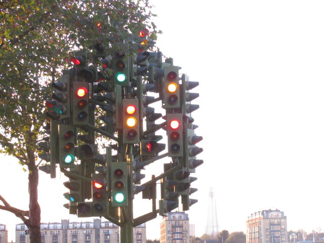
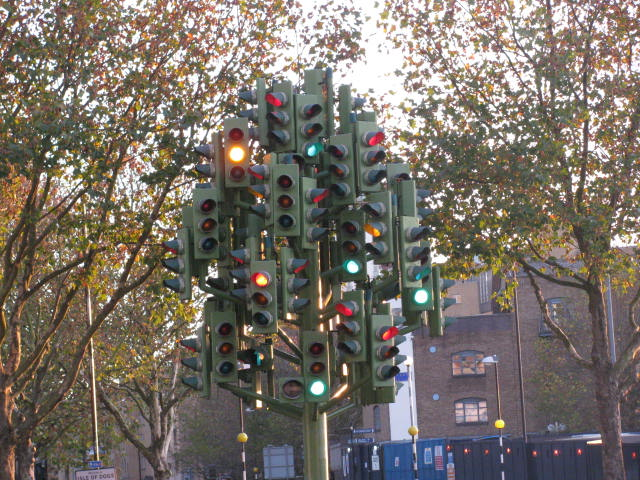
PLESSEY (later Siemens) - blue light for bus priority
This is a one off. It is located near Maidstone. This light is a few meters before the main traffic lights (which have now been replaced with boring TSEUs). When the impedance sensor detects a certain amount of impedance the system knows the vehicle is a bus (only double deck buses like the Enviro 400 and B7TLs activate it). When activated the blue light comes on for 3 seconds to tell the bus driver that it has been detected, and the main traffic lights change immediately (normally they will take up to a minute to change).
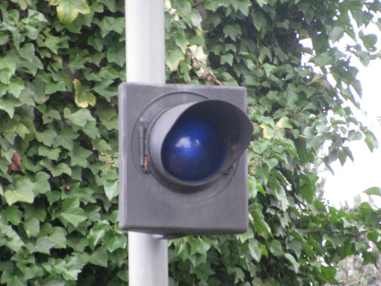
PLESSEY - wigwag accompaniment
This is located at some fire stations. When the fire engines need to leave in an emergency, a wigwag comes on to stop the cars, when this happens this wigwag accompaniment also come on to tell the firemen that the wigwags are running. This traffic light is rather strange, the middle yellow light comes on for 3 seconds, then the outer blue lights flash alternately.
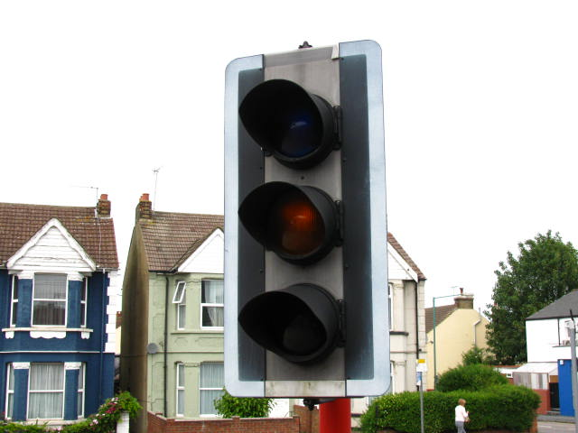
PAGE SIGNALS - wigwag accompaniment
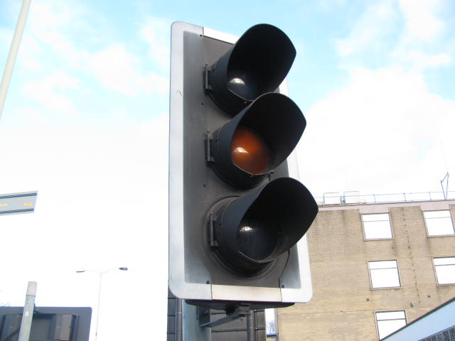
Traffic Systems Co-operative - boat
Marinas are good places to find unusual traffic lights. These are located at Chatham maritime lock (located each side of the lock to tell boats when to go in). The main part of it is a Traffic Systems Co-operative (as you can tell from the line around the edge), but the light attached to the side is a Plessey.
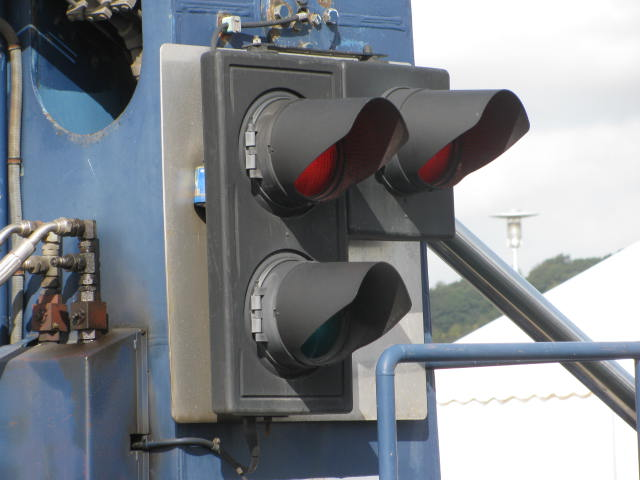
PAGE SIGNALS - Fibre optic arrow
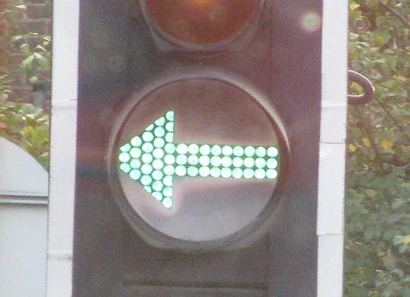
GEC - Pedestrian tram Wigwag (in Manchester)
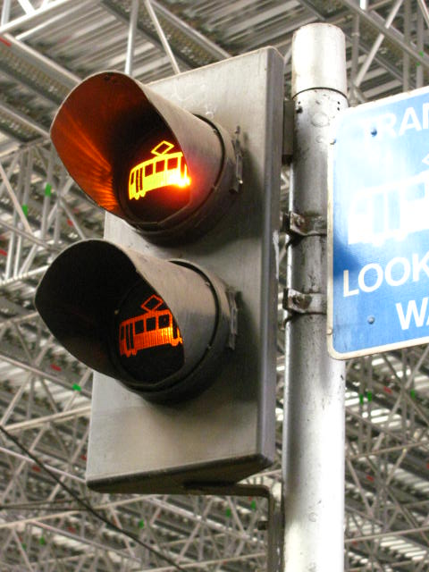
PAGE SIGNALS - tram
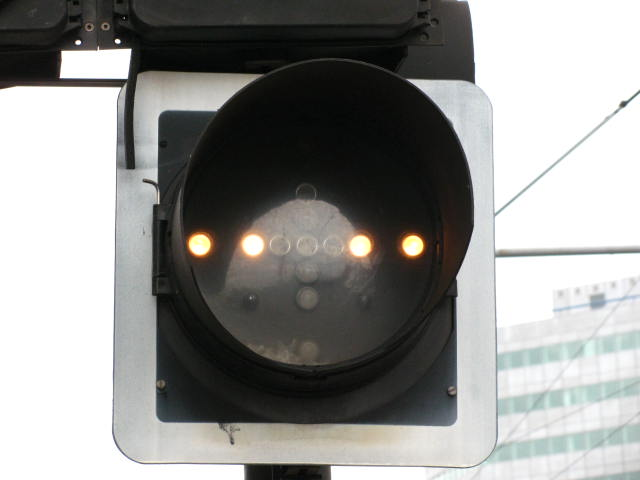
Traffic Systems Co-operative - Wigwag
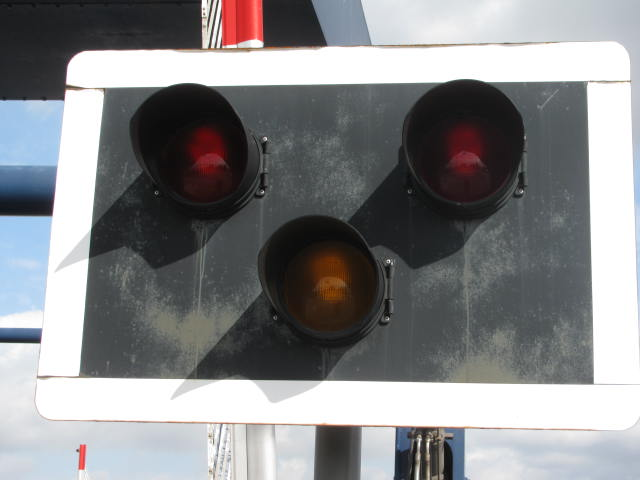
GEC - Wigwag
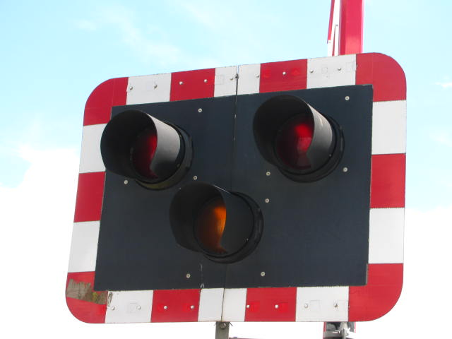
GEC - Wigwag
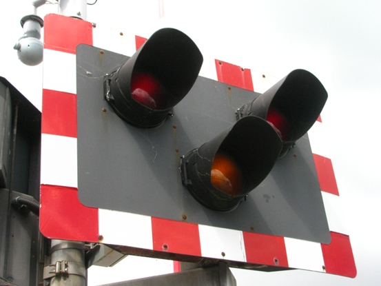
GEC - Wigwag with wind holes
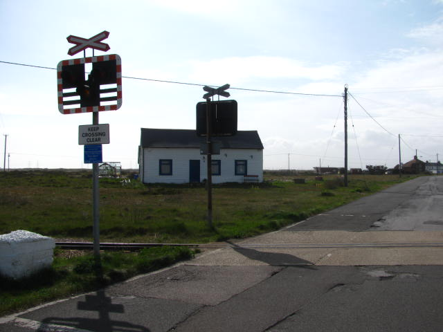
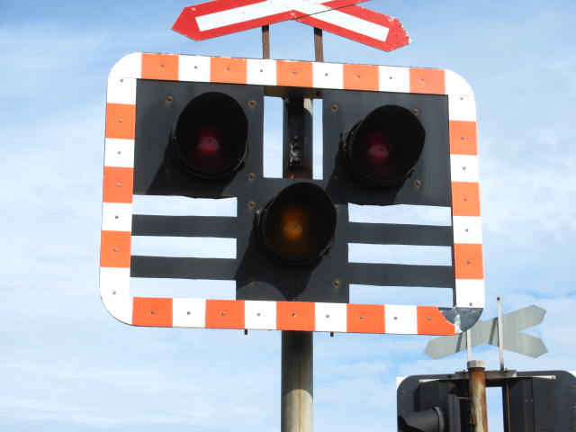
GEC - Crossing active light for train driver
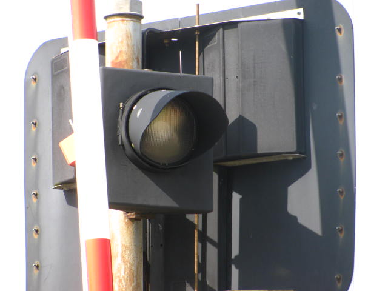
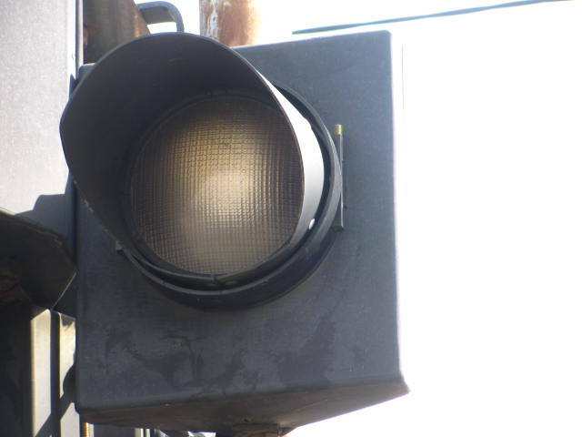
GEC - Wigwag with rear light
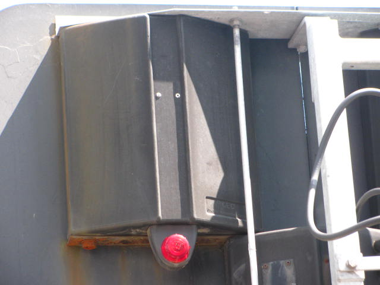
UNKNOWN MAKE - VERY RARE, Mellor being used as a train signal outside Hythe station on Romney Hythe and Dymchurch Railway

UNKNOWN MAKE - Traffic light in police traing center at Milton Range, Gravesend
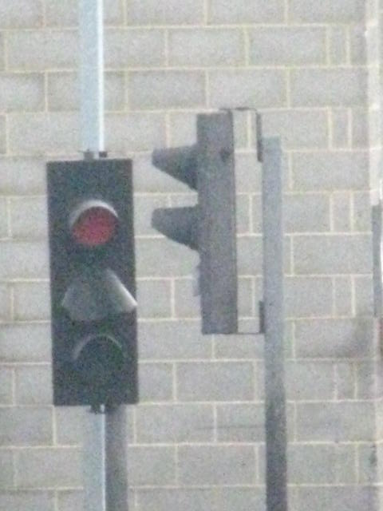
DULL LONDON MELLORS
PLESSEY (later Siemens) - London traffic light
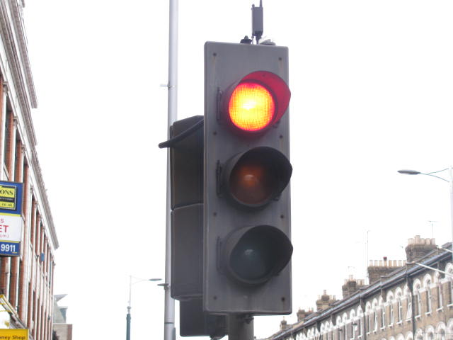
PAGE SIGNALS - London traffic light
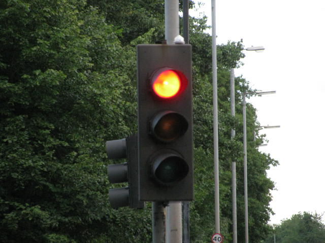
GEC - London traffic light
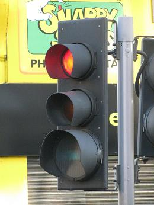
MORE PHOTOS OF MELLOR TRAFFIC LIGHTS
PLESSEY (later Siemens) - main traffic light


PAGE SIGNALS
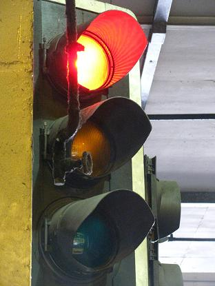
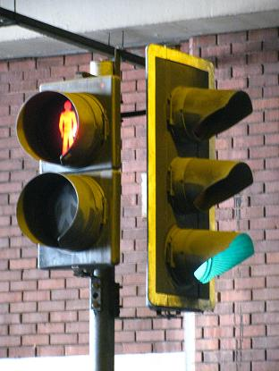

GEC Elliott

GEC

Monitron

Traffic Systems Co-operative

PLESSEY (later Siemens)
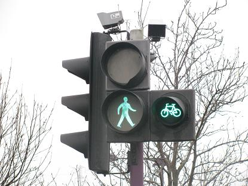
PAGE SIGNALS
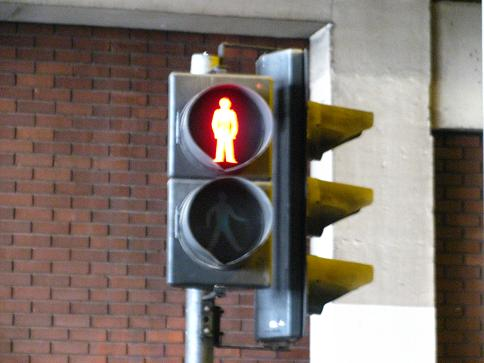
Old Push buttons
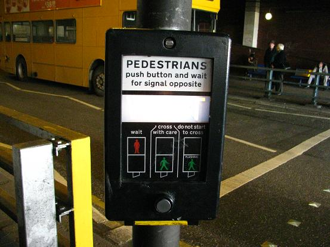
CLICK HERE TO GO BACK TO MY TRAFFIC LIGHTS PAGE